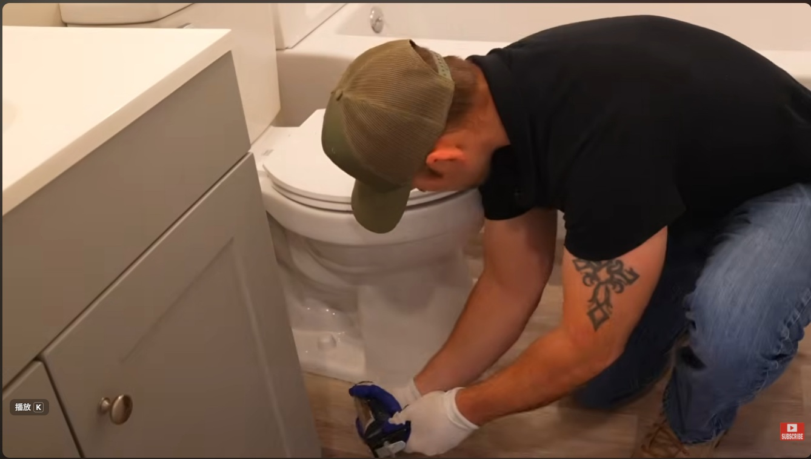
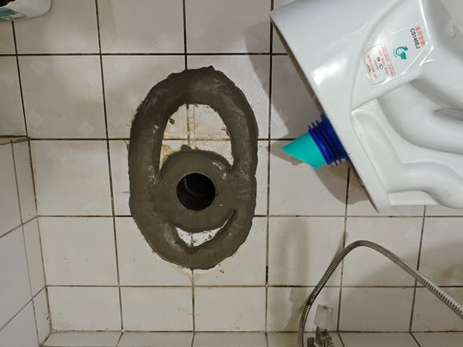

一次搞懂乾式安裝與濕式安裝的差異
定義： 使用膨脹螺栓與矽利康（Silicone）固定的現代主流工法。

🔍 乾式施工圖片
🔍 濕式施工圖片定義： 傳統工法，利用水泥砂漿將馬桶底座與地磚固定。
| 比較項目 | 乾式工法 | 濕式工法 |
|---|---|---|
| 固定材料 | 油泥、螺絲、矽利康 | 水泥砂漿 |
| 施工時間 | 約 1-2 小時 (完工即用) | 需等待水泥乾燥 (約 24 小時) |
| 日後維修 | 容易，割開矽利康即可 | 困難，需敲掉水泥可能損壞地磚 |
| 適用環境 | 乾濕分離浴室、新式大樓 | 傳統公寓、地面不平整處 |